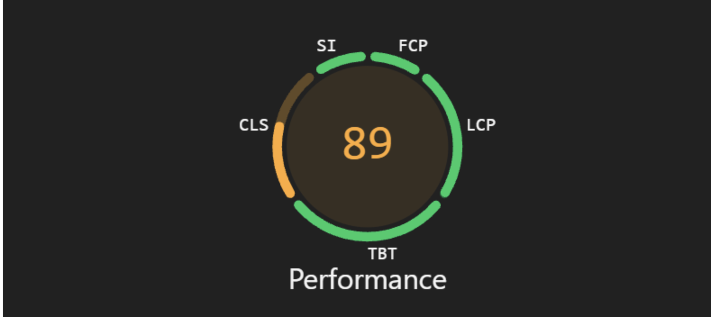
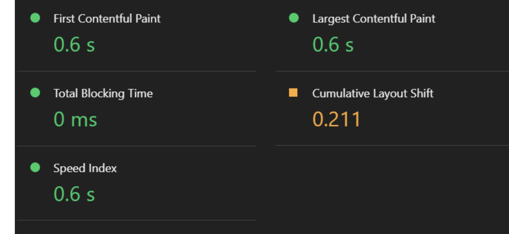
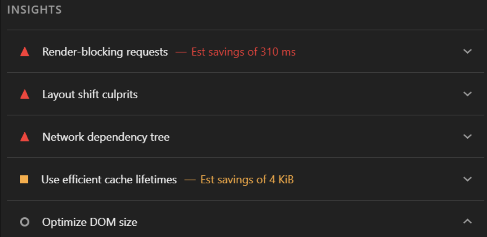
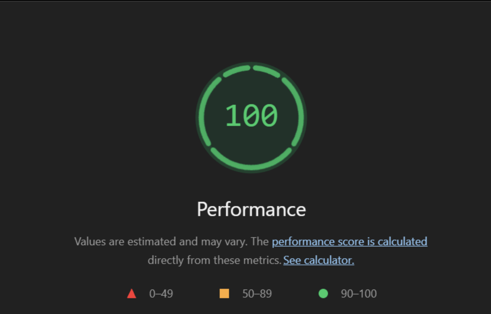
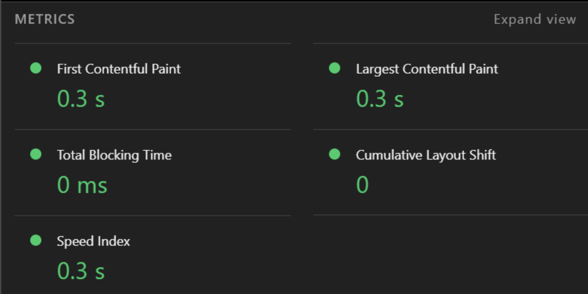

Website Performance Audit Report
Prepared by: Saurav
1. Introduction
I used Google Lighthouse to evaluate the performance of my personal portfolio website. I conducted the audit before and after making improvements to identify performance issues and measure the effectiveness of the changes.
2. Before the Improvements
Initial Lighthouse performance score: 89/100
My website loaded relatively quickly, but Lighthouse identified several opportunities to improve its performance.
| Metric | Before |
|---|---|
| First Contentful Paint | 0.6 s |
| Largest Contentful Paint | 0.6 s |
| Total Blocking Time | 0 ms |
| Cumulative Layout Shift | 0.211 |
| Speed Index | 0.6 s |


3. Issues Identified
The Lighthouse report identified several issues that could affect my website's performance.
Issue 1: Render-blocking resources
Some CSS and font resources delayed the browser from displaying the website. These resources needed to be downloaded and processed before the page could be displayed.
Issue 2: Layout shifts
Some elements moved while the page was loading. This affected the visual stability of the website and made the loading experience less smooth.
Issue 3: Large resources
Some files could be optimized to reduce their size and improve loading speed.

4. Performance Improvements
Fix 1: Optimizing CSS
I removed unnecessary CSS rules and organized my stylesheet to reduce its size. This helped the browser process the stylesheet more efficiently.
Fix 2: Optimizing Images
I optimized images used on my website to reduce their file sizes while maintaining acceptable image quality.
Fix 3: Improving Resource Loading
I improved the way important resources are loaded so that the browser can display the main content more efficiently.
5. After the Improvements
Final Lighthouse performance score: 100/100


| Metric | Before | After |
|---|---|---|
| Performance score | 89 | 100 |
| First Contentful Paint | 0.6 s | 0.3 s |
| Largest Contentful Paint | 0.6 s | 0.3 s |
| Total Blocking Time | 0 ms | 0 ms |
| Cumulative Layout Shift | 0.211 | 0 |
| Speed Index | 0.6 s | 0.3 s |
6. Which Change Mattered Most?
The most important improvements were optimizing the resources that affected the initial loading of the website. By reducing unnecessary resources and improving the loading process, I was able to improve the overall performance.
The improvements also made the website more visually stable and reduced the time needed to display the main content.
7. Conclusion
This performance audit helped me understand how different resources affect website loading speed. By identifying performance issues and making improvements, I was able to create a faster and more efficient portfolio website.
The Lighthouse audit provided useful information about the website's performance and helped me evaluate the effectiveness of my improvements.